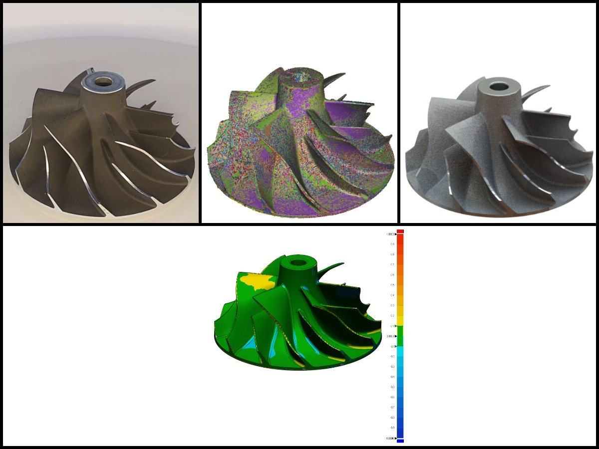
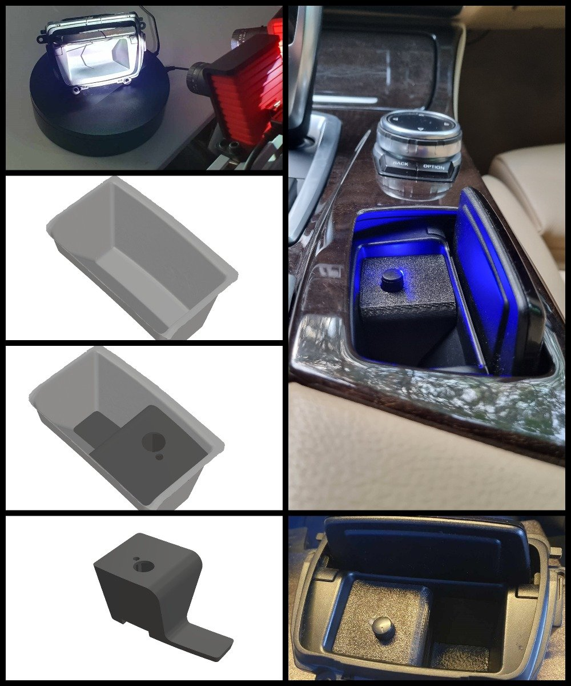
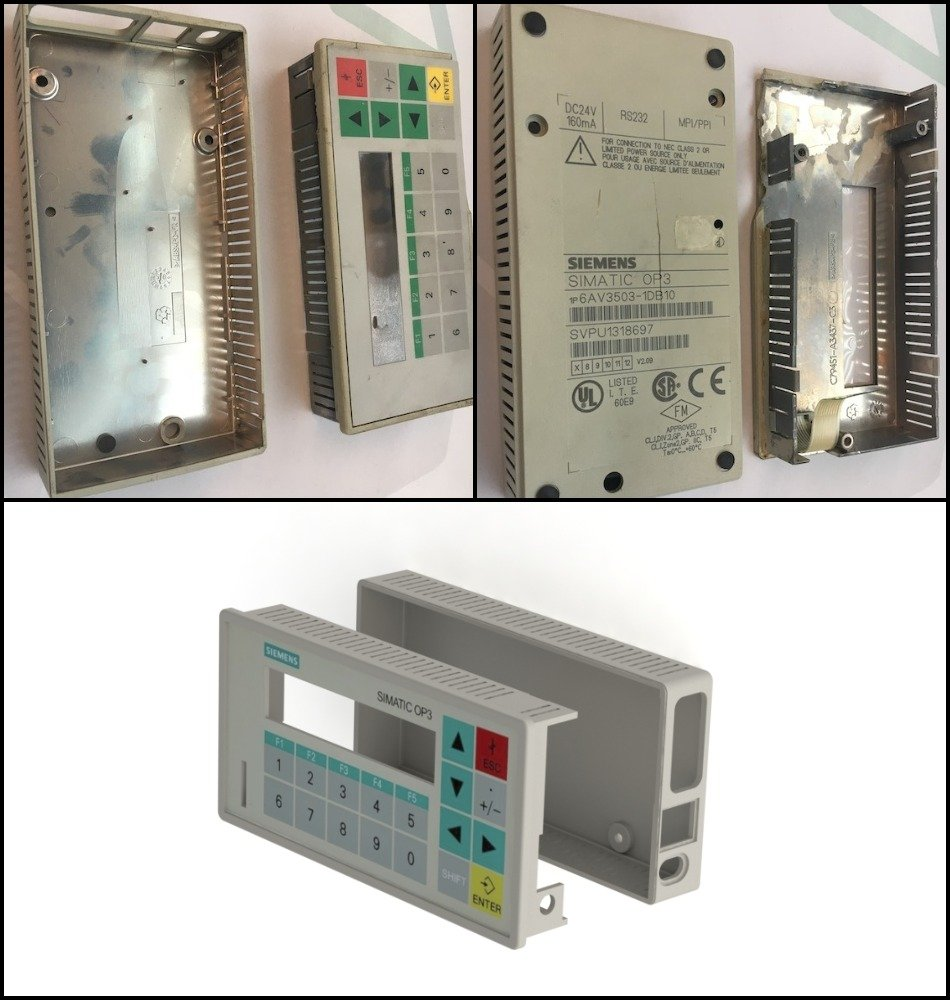
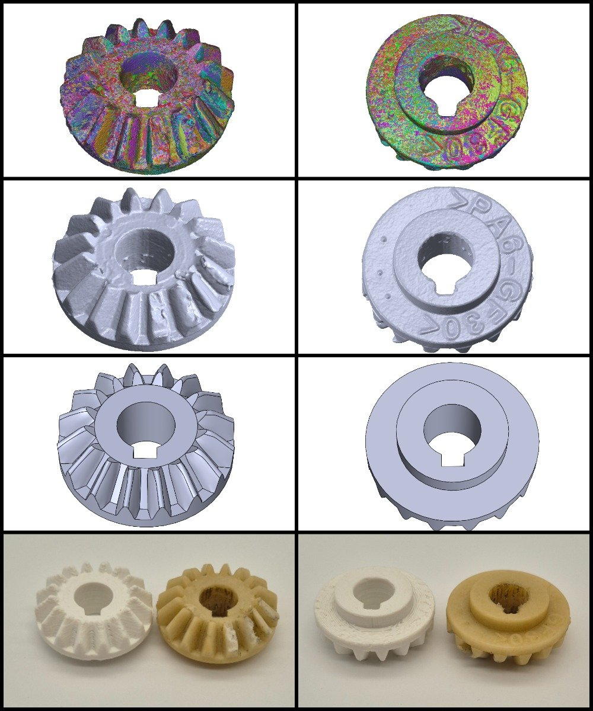
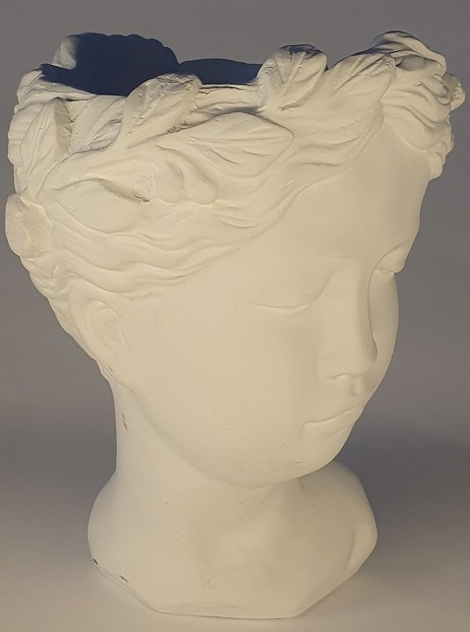

СКАНИРОВАНИЕ · CAD
Крыльчатка компрессора
Сканирование геометрии и подготовка параметрической модели по физической детали.
ПРОЕКТЫ AIQME
Здесь виден путь от исходного объекта к цифровой модели и готовой детали — на примерах конкретных задач.

Сканирование геометрии и подготовка параметрической модели по физической детали.

Модель и изготовление вставки для установки регулятора в штатную пепельницу автомобиля.

Воссоздание корпуса операторской панели по существующему образцу.

Сломанная шестерня строгального станка была отсканирована, смоделирована и напечатана из нейлона.

Форма оригинального бюста была перенесена в цифровой вид для дальнейшей работы с моделью.